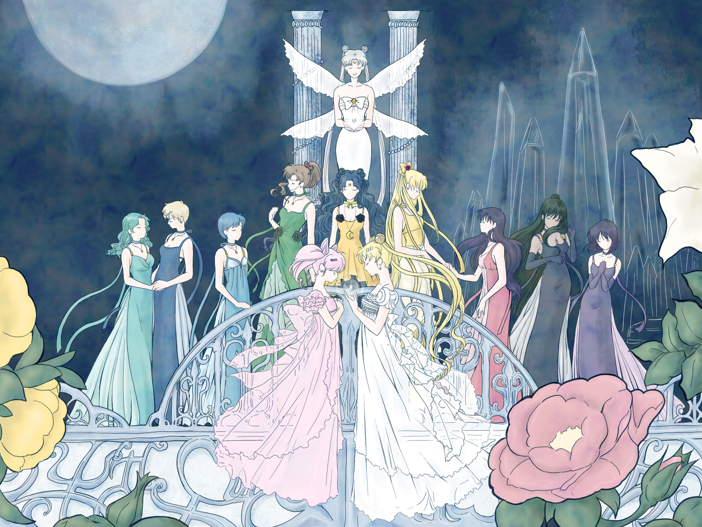

Galeria



La Princesa había explorado la Tierra para ver cómo eran los campos verdes en realidad, aunque este hecho estaba prohibido. En una de sus visitas, conoció al príncipe de la Tierra, Endymion, y se enamoraron.
Durante el ataque que causó la caída del Reino de la Luna, el Príncipe Endymion murió protegiendo a Serena. La madre de Serenity, la Reina, selló el espíritu maligno, pero en el proceso, todos los involucrados en aquella batalla murieron. Antes de morir, la reina utilizó el Cristal de Plata para darle a su hija y a los demás una segunda oportunidad en la vida, esperando que Serena y Endymion pudiesen encontrar la oportunidad de ser felices juntos.
Tiempo después, Serenity se reencarna como Usagi Tsukino en el siglo XX y conoce a su vez a la reencarnación de Endymion, Mamoru Chiba, junto con las de sus antiguas amigas. Usagi ocasionalmente toma la forma de la princesa durante la metaserie en momentos de tensión en la trama cuando se requiere de más poder que el que posee Sailor Moon. Serena descubre su identidad como la princesa en el episodio 34.
En momentos cumbre, Usagi, con la personalidad de Serenity, a veces posee alas de ángel en su espalda. Esto sucede hacia la batalla final de la temporada SuperS cuando debe salvar a Chibiusa en su encuentro con Pegaso, y durante Stars en la batalla final con Galaxia, absolutamente poseída por fuerzas malignas. No está claro si este poder proviene de su vida pasada, si es un poder propio de la protagonista o si viene de Pegaso y la espada utilizada respectivamente durante esas luchas en particular.
Sailor Moon es la primera temporada del animé de Sailor Moon. La serie se estrenó por primera vez en Japón el sábado 7 de marzo de 1992 a las 19:00 y concluyó el 27 de febrero de 1993. Basada en el primer arco del manga, ni éste ni el anime estaban previstos para durar más de una temporada, pero el éxito alcanzado con ambos logró que se hicieran secuelas.
Su nombre proviene del mito de Selene, diosa de la Luna que se enamoró de un hombre llamado Endimión. También corresponde a su personalidad, ya que no tiene la misma alegría que en sus otras formas.